Think-to-Personalize：把用户历史推理与个性化稠密召回统一起来
这篇论文研究本地生活电商搜索中的个性化召回：模型不再只把用户输入当成待编码的短字符串，而是结合购买历史，先生成一个表达潜在需求的 intent-enhanced query，再把它压入可做 ANN 检索的稠密向量。第一作者 Angqing Jiang 的主机构是中国科学技术大学，合作机构包括美团；论文已被 CIKM 2026 接收，公开时间为 2026-08-19。论文入口见 arXiv:2608.18855，官方出版 DOI 为 10.1145/3799682.3840844。事实包仅核验了该 DOI，不把它误写为独立代码页已核验。
论文提出的 Think-to-Personalize（TTP）把两个过去常被拆开的动作放进同一模型：一方面显式推断“这个用户此刻为什么搜这个词”，另一方面用对比学习保证推断后的表示仍适合大规模向量召回。训练采用 SFT 冷启动和 GRPO 检索效用对齐两阶段；上线则通过 T+1 用户—宽泛查询缓存与 305M 蒸馏检索器规避逐请求运行 3B 推理模型的成本。
本地生活电商中的查询往往稀疏且含混，只编码查询本身无法覆盖藏在购买历史里的个性化需要；而既有历史建模多停留在隐式向量交互，外置 LLM 改写器又没有直接为检索效用优化。论文要弥合的是字面查询与用户潜在意图之间的缺口，并让推理过程真正受下游召回结果约束。
1. 背景和问题
1.1 从 query-centric 语义匹配到 user-query 联合理解
稠密召回在电商搜索中的标准做法，是把查询和物品分别编码成向量，再以点积或余弦相似度通过 ANN 从数百万物品中快速取回候选。BERT、Sentence-BERT、BGE 到 Qwen-Embedding、NV-Embed 的演进增强了文本语义，但输入范式依旧主要是 query-centric：用户搜“Thai”“Luck”或“Play Water”时，编码器只看短查询的表面形式。对网页问答，这种缺失可以靠语料中的通用知识补一部分；对本地生活服务，同一个词却可能对应餐饮、按摩、品牌缩写或亲子娱乐，语义字典没有用户过去的消费轨迹，无法知道哪个解释对当前人更可能成立。
用户历史恰好提供了消歧所需的个体上下文，却不是把十条商品标题简单拼在查询前就能充分使用。历史中同时存在长期偏好、偶发购买、代购、家庭成员需求和已经过期的兴趣；当前查询真正相关的行为常只占少数。UIA、History-Aware、MAPs 等个性化方法通过 attention、序列编码或 embedding interaction 隐式聚合这些行为，优化信号最终仍是“把正物品拉近”。它们可以学到统计相关性，却未必能把“用户反复购买 Luckin，所以 Luck 更可能是品牌缩写”这样的中间判断显式化，也较难审计一次异常召回究竟来自哪段历史。
1.2 外置 query rewrite 为什么仍与召回目标错位
另一条路线是让 LLM 读取历史并改写查询，再把改写文本交给独立 retriever。P-PRF、CoPS 一类方法使推理过程可读，但常见训练目标是 next-token prediction：teacher 认为改写自然、具体，不等于该文本在向量空间里更靠近最终购买物品、并远离同批负例。一个语言上合理的扩展可能添加了历史中醒目的品牌或人群标签，却把当前需求拖向错误方向。重写器和检索器分开训练还会产生接口漂移：前者改变输出分布后，后者并没有同步获得端到端反馈。
TTP 因此把研究问题缩成三个相互制约的条件。第一，必须从当前查询相关的历史中显式生成个性化意图，而不是平均混合整个序列。第二，生成结果必须通过同一模型的特殊 <embed> 状态进入稠密检索，使语言推理和向量表示共享参数。第三，SFT teacher 提供的合理改写仍只是冷启动，后续需要用检索得分增益直接评价 rollout，并避免低质量 rollout 反向污染对比学习。这不是把聊天式 CoT 原样接到搜索前，而是为召回构造一个可优化、可裁剪、可部署的推理接口。
1.3 论文声称的贡献应如何拆开检验
论文的核心主张至少包含四层，证据强度不能混为一谈。表示层面要看共享 query/item encoder 加 intent-enhanced query 是否优于只拼历史或“先改写、再冻结”的 Decoupled-Stage；训练层面要看 RL 增益究竟来自 GRPO、检索奖励还是动态正例；泛化层面要看私有日志上的优势能否延伸到 KuaiSearch 与 Amazon；工程层面则要看 3B 模型如何绕过实时延迟，并在控制候选预算和下游排序的在线实验里贡献增量。若只引用订单量 +0.46%，会跳过模型规模、缓存覆盖、离线指标与统计披露边界；若只引用 Recall，又无法说明个性化通道是否值得接入生产系统。
这项工作也连接推荐系统与大模型后训练。对推荐/搜索，它把“用户画像”从静态 embedding 变成随 query 条件化的可读意图，再落回候选召回；对大模型，它把 GRPO 的奖励从数学答案正确性换成检索效用，并展示 frozen reference 既可以约束 KL，也能作为稳定的语义评分锚点。真正值得关注的不是“用了 LLM”这一标签，而是推理文本、向量出口、对比损失和在线系统之间是否形成一条能被消融验证的闭环。
2. 方法
2.1 统一的 reasoning-and-retrieval 表示链路
TTP 处理一个开放文本个性化召回任务。用户集合记为 $\mathcal{U}$，物品集合记为 $\mathcal{I}$；用户 $u$ 的购买历史 $H_u$ 由按时间排列的物品文本元数据组成，当前查询为 $q$，目标是从全库取回真实正物品 $i^+$。query 侧不是直接送入 $q$，而是按论文给定协议拼接指令、历史和查询：
在接收这一串行化输入后，模型并不立即输出向量，而是先自回归地产生意图改写 $r$；生成内容被包在 <think> 与 </think> 之间，最后追加 <embed>，把可读的个性化判断和固定的向量抽取位置写进同一输出协议：
最终取 <embed> 位置的最后隐状态为 query 向量 $e_q$；item 侧把标题、类目、门店等元数据序列化，并由同一个共享 encoder 的 <embed> 隐状态得到 $e_i$。两侧共享参数，使 item 监督能回传到 query reasoning；线上 ANN 仍使用简单点积，不需要在全库物品侧执行生成，召回分数为：
符号解释：$I_{\mathrm{task}}$ 是要求模型结合历史重写电商查询的任务指令，$H_u$ 是筛选并恢复时间顺序后的购买序列，$r$ 是显式 intent-enhanced query，$e_q/e_i$ 是 ANN 可索引的 query/item 表示。关键不是把生成文本当成独立特征，而是让生成它的共享隐藏状态同时承担检索向量出口；检索梯度因此可以穿过 <embed> 回到前面的历史理解与改写参数。
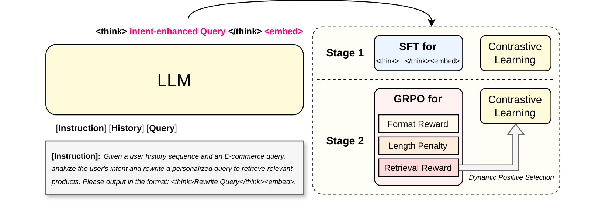
Figure 1 左侧画的是推理接口：instruction、history 与 query 进入 LLM，输出 <think> intent-enhanced Query </think><embed>。右侧不是两个彼此独立的模型，而是同一参数链路的两个训练阶段。Stage 1 用目标改写做 SFT，同时用正负物品做 contrastive learning，先保证格式正确且 embedding 不失去检索能力；Stage 2 用格式、长度和检索三类奖励驱动 GRPO，再把组内最高检索奖励的输出送入对比学习。图中从动态正例返回 contrastive learning 的箭头很重要：RL 不只改变可见改写文本，也通过经过筛选的 query representation 继续整理向量空间。训练时 query/item 两侧共享且同步更新；推理时不再需要 teacher 或 reward model，但完整 3B TTP 仍需生成 $r$，因此论文另做缓存和蒸馏才能上线。
2.2 推理增强数据构造与重写增益过滤
SFT 数据来自过去一年的购买日志。每个历史物品以 Title、Category、Menu 等字段串接为文本；若历史超过 $N$，先用 bge-reranker-v2-m3 按当前查询选出 top-$N$ 相关物品，再恢复这些物品原本的时间顺序。这个先相关筛选、后时间重排的顺序兼顾了两点：过滤和当前 query 无关的行为噪声，同时保留近期/先后关系供模型判断。论文最终把 $N$ 设为 10，后续 Figure 6 也显示继续增长到 15 或 20 没有单调收益。
teacher 使用 Qwen3-32B，每个样本生成 $K=5$ 个候选改写。提示词要求模型在四种行为间做选择：查询已经清楚时抽取与其相关的偏好；查询宽泛时做意图消歧；拼写、缩写或描述含混时做纠正；历史没有相关证据时保持原查询。中间 CoT 不作为学生目标，训练集只保留增强查询，目的是缩短学生生成和线上延迟。“No Rewrite”不是无效样本，而是抑制过度个性化的显式负反馈；如果训练集只保留改写成功例，模型会学到无论证据是否相关都应追加历史标签。
五个候选不会直接全部进入 SFT。重排器分别计算候选改写和真实购买物品 $i^+$ 的相关性，并与原查询得分比较；非正增益候选先剔除，再从剩余候选按 gain 排名前三中均匀抽一个作为目标。此外还保留一定比例的中性不改写样本，避免样本分布向“越具体越好”倾斜。这一步已经用 retrieval proxy 清洗 teacher 数据，但 proxy 仍是 bge-reranker 而不是最终 shared encoder，且每个 query 的真实购买也可能受曝光和排序偏差影响，所以它只能为 SFT 提供较好起点，不能替代第二阶段端到端对齐。
2.3 Cold-Start SFT：生成损失与 InfoNCE 联合初始化
SFT 首先增加 <think>、</think>、<embed> 三个特殊 token。对输入 $x$ 和 teacher 目标 $\hat y$，训练既对 intent rewrite 与格式 token 做 next-token prediction，也从 <embed> 位置抽取 $e_q$，用 batch 内其他物品作负例构造 InfoNCE；两种目标在 cold-start 阶段一次联合优化：
符号解释：$\hat y_t$ 是目标改写序列第 $t$ 个 token，$\mathcal{N}$ 是 batch 内负物品集合，$\tau=0.02$ 控制相似度分布尖锐度，$\lambda_{\mathrm{gen}}=0.5$ 平衡格式/文本模仿与向量判别。只有 $\mathcal{L}_{\mathrm{gen}}$ 时，学生可能复述 teacher 却生成检索无效表示；只有 $\mathcal{L}_{\mathrm{cl}}$ 时，模型没有稳定的 reasoning 输出协议。论文把这一阶段称为 cold start，原因是后续 GRPO 需要策略先能稳定地产生合法、不过长、基本有用的候选，否则组内奖励大都退化，动态选择也没有可靠正例可取。
实现上，backbone 是 Qwen2.5-3B-Instruct，SFT 用 LoRA，$r=16$、$\alpha=32$，单卡 batch 64，学习率 $10^{-4}$；query/item 输入均最多 512 token，超长时优先截历史，保留指令、当前 query 与物品核心字段。向量维度为 2048，两个 tower 共享同一 LLM 并同步更新。私有平台由 Qwen3-32B 生成并清洗 100 万训练样本；进入 RL 的是 rewrite gain 最高的 30%，这会让 RL 更集中在改写确实影响召回的区域，也意味着它对完全不需个性化的查询覆盖并不等同于全量训练分布。
2.4 GRPO：用检索效用约束推理并动态选择正例
第二阶段把格式合法性、生成长度和实际检索增益组成一个奖励。格式错直接记负分；超过 64 token 的部分线性扣分；最关键的检索项比较改写前后正物品得分与正负间隔。四个式子可以合并读成同一条 reward computation：
符号解释：$q'$ 是 rollout 生成的增强查询，$\Delta S_{\mathrm{pos}}$ 测绝对正例增益，$\Delta S_{\mathrm{margin}}$ 测正例相对平均负例的间隔是否扩大；$\alpha=2$、$\beta=1$，最终检索奖励截断到 $[-1,1]$。前者防止模型只把所有分数一起抬高，后者要求判别边界更清楚。冻结 SFT 模型既是 KL reference，又是检索 reward model，构成不会随 actor 漂移的语义坐标系。若使用未冻结策略自评，actor 可以利用自己正在变化的打分伪影，Table 7 显示这会造成严重崩塌。
对每个输入采样 $G=8$ 个输出，以组内均值和标准差归一化优势 $A_i=(R_i-\bar R)/\sigma_R$。这样不需要单独训练 value network，也能让高于本组平均奖励的改写获得正优势；旧策略概率比、裁剪项和 reference KL 共同限制单次更新，GRPO 目标为：
符号解释：$\rho_i=\pi_\theta(y_i\mid x)/\pi_{\theta_{\mathrm{old}}}(y_i\mid x)$ 是新旧策略概率比，clip 限制单次更新，$D_{\mathrm{KL}}$ 阻止策略远离 SFT reference。GRPO 以组内相对奖励代替独立 value network，省去 critic，但它产生的八个 rollout 并不都适合更新 embedding；把随机样本当正 query 会把语义错误直接写入检索空间。
GRPO 可以从全部 rollout 学策略，但对比学习不能无差别接收这些样本。论文先在组内按冻结模型的 retrieval reward 排序，只把效用最高的候选定义为 $y^*$；这一选择发生在 embedding 更新之前，因此属于表示空间的去噪门：
若 $R_{\mathrm{retrieval}}(y^*)>0$，InfoNCE 使用 $y^*$ 对应 embedding；否则回退到原查询 $q$，避免“组内最好但仍比原查询差”的 rollout 成为伪正例。策略损失与经过这一条件选择的对比损失共同更新同一模型，最终目标为：
符号解释：动态回退把 RL 探索和表示学习隔离出一道质量门；策略仍能从所有 rollout 的相对奖励学习，但 contrastive space 只接收正增益候选或安全的原查询。RL 基于 VeRL 训练 3 epoch，学习率 $2\times10^{-7}$，总 batch 128，$\lambda_{\mathrm{fmt}}=0.5$、$\lambda_{\mathrm{len}}=0.5$、$\lambda_{\mathrm{ret}}=2.0$、$\lambda_{\mathrm{cl}}=0.1$，使用 8 张 A100。训练时冻结 reference/reward 带来额外显存和打分成本；线上推理不需要这些训练组件，但完整模型仍要自回归生成意图，因此效率问题被推迟到部署层解决。
3. 实验结果
3.1 数据、指标与强基线口径
私有评测含四组任务。General 有 15,795 个真实搜索查询，Broad 有 14,634 个宽泛/欠指定查询，LongTail 有 7,746 个来自查询频率尾部 10% 的样本，三者面对 4,481,107 个物品并以实际购买物品为 ground truth；Relevance 则是 300,000 个无用户历史的 query-item 对，由内部领域适配 13B relevance LLM 标成三级相关性。前三组报告 Recall@10/20/100 与 MRR@100，Relevance 报模型分数和标签的 Spearman。这里有两个边界：购买正例混合了曝光、价格和排序影响；Relevance 的标注者又是内部模型，不是人工真值，所以两者分别更接近“行为效果”和“语义保持”代理。
公开集是 KuaiSearch lite recall 与 Amazon PersonalWAB。KuaiSearch 有 8,468 个查询、6,634,118 个物品，历史来自点击和购买；Amazon 有 2,174 个查询、35,772 个物品，查询是 PersonalWAB 合成版本，历史来自过去购买。训练样本分别为 287,093 与 6,896。基线覆盖通用 BM25、BERT-base、Qwen-Embedding，隐式历史 UIA、History-Aware、MAPs、CoPPS，以及 HyDE、P-PRF、Decoupled-Stage。尤其 Decoupled-Stage 使用与 TTP 相同 SFT 数据和检索监督，只是先冻结重写器再训练独立 retriever，因而比“随便找一个外部改写器”更能检验端到端统一是否有价值。
3.2 私有评测：General、Broad、LongTail 与无历史 Relevance
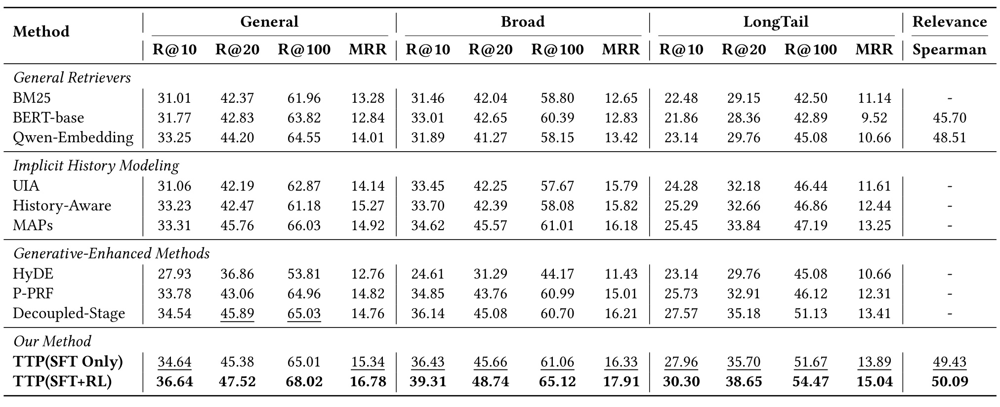
Table 4 显示完整 TTP(SFT+RL) 在 General 的 Recall@20 为 47.52，分别高于 MAPs 的 45.76 和 Decoupled-Stage 的 45.89，即提升 1.76 与 1.63 个百分点；Recall@100 为 68.02，MRR 为 16.78。Broad 上从 Qwen-Embedding 的 41.27 提高到 48.74，增益 7.47 点，明显大于 General 相对 Qwen 的 3.32 点；LongTail 上完整模型为 38.65，比 Decoupled-Stage 的 35.18 高 3.47 点。这种“越含混、越长尾，历史推理增益越大”的梯度与论文 intent-gap 假设一致，也比只看全量平均更有解释力。SFT-only 已经普遍强于通用编码器，RL 又把 General Recall@10 从 34.64 推到 36.64，说明改写与检索共享表示不是完全依赖 RL 才生效。无历史 Relevance 上，SFT-only/完整模型 Spearman 为 49.43/50.09，至少没有显示个性化训练明显破坏通用语义；但标签来自内部 13B 模型，不能等同于人工冷启动质量。作者称完整模型相对最佳基线的提升达到 $p<0.05$，表中没有披露重复试验次数和置信区间，精读时应把它视为统计显著性声明，而不是误差结构已充分公开。
3.3 公开基准泛化与可比性边界
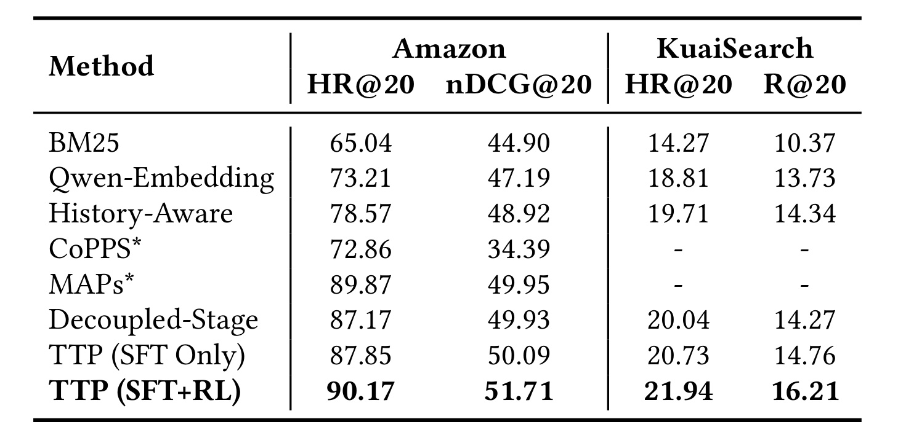
Table 5 给出私有平台之外的验证。Amazon 上 TTP(SFT+RL) 的 HR@20 为 90.17、nDCG@20 为 51.71；MAPs 的对应数字为 89.87/49.95，Decoupled-Stage 为 87.17/49.93，SFT-only 为 87.85/50.09。KuaiSearch 上完整模型 HR@20/R@20 为 21.94/16.21，高于 Decoupled-Stage 的 20.04/14.27，也高于 SFT-only 的 20.73/14.76。两套公开数据都支持“RL 在 SFT 之上继续增益”，且 KuaiSearch 的物品库规模接近私有场景，降低了只在小库上有效的担忧。不过表中 CoPPS、MAPs 带星结果来自各自论文，KuaiSearch 又没有这两行数字，并非所有方法都在同一代码、随机种子和硬件上复跑；Amazon 查询还是合成的 PersonalWAB 版本，不能代表真实线上宽泛查询分布。公开集证据证明方法不只拟合一个内部日志，但尚不能消除数据构造差异和复现资源门槛。
3.4 人工标注与案例：何时改写，何时过度个性化
作者随机抽取 200 个 broad-query 案例请专家标注。全部样本中 34.0% 保持原查询不变；只看发生改写的样本，Intent Disambiguation 占 52.3%，Preference Extraction 占 40.9%，Query Correction 占 4.5%，Over-Personalization 占 2.3%。这组分布说明模型的主要动作不是修拼写，而是把历史用于消歧或加入与查询相关的偏好；34% no-rewrite 也表明训练中的中性样本确实对应一类可见行为。但论文没有给标注者数量、一致性系数或类别判定细则，2.3% 只能描述该 200 样本内的人审比例，不能直接外推到全部线上请求。
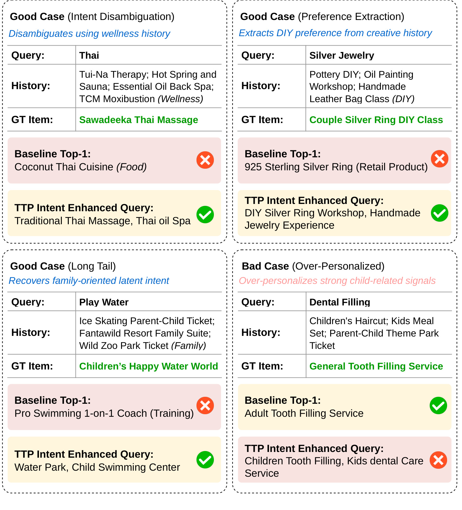
Figure 4 把行为差异落到检索对象。“Thai”在 wellness 历史下被扩成泰式按摩与精油 SPA，避开 Qwen-Embedding 的泰国菜；“Silver Jewelry”结合陶艺、油画、手工皮具经历，被改为 DIY 银戒体验，命中实际购买；“Play Water”利用亲子票和家庭套房历史，恢复儿童水世界意图。右下角失败例同样重要：用户历史长期出现儿童理发、儿童餐和亲子公园，TTP 把“Dental Filling”强行改成儿童补牙，但真实购买是一般补牙服务，原始基线反而更接近。四个卡片说明显式 reasoning 的可审计价值，也暴露因果局限：一致的家庭偏好是强相关信号，却未必属于当前查询。部署时可把 rewrite gain、历史证据集中度和 no-rewrite 概率作为保护条件，而不能把“历史足够一致”直接等价为“当前请求属于相同家庭成员”。
3.5 核心组件与 intent-enhanced query 消融
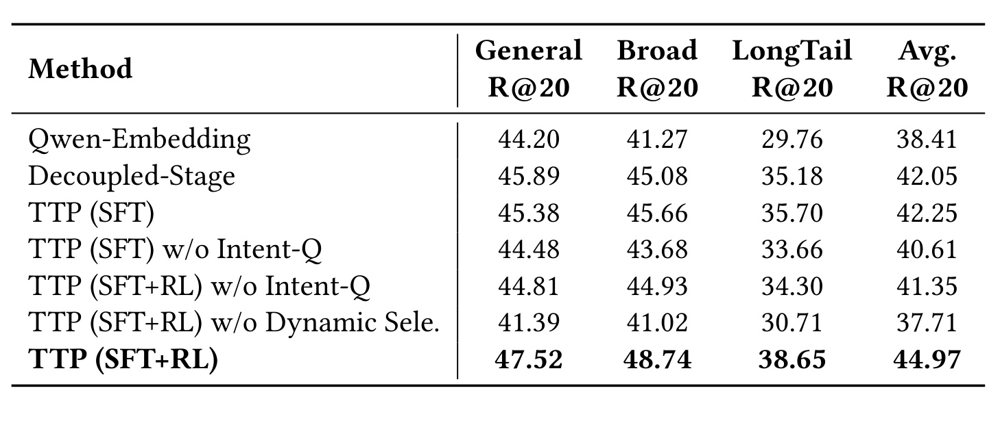
Table 6 先给出 Qwen-Embedding 平均 Recall@20 38.41，Decoupled-Stage 42.05，TTP(SFT) 42.25，说明共享模型在只有 SFT 时已略优于强解耦基线。把 SFT 的 intent-enhanced query 换回原查询，平均值降到 40.61；在 SFT+RL 下换回原查询则为 41.35，而完整 RL 为 44.97，显式改写贡献在 RL 后更大。以 Broad 为例，SFT 带/不带 Intent-Q 相对 Qwen 的增益是 4.39/2.41 点，差 1.98；RL 带/不带为 7.47/3.66 点，差扩大到 3.81。这更接近“RL 把可见意图文本与检索效用对齐”，而不只是让隐藏向量整体变好。最危险的变体是 w/o Dynamic Selection：平均值 37.71，低于 SFT 的 42.25，甚至略低于 Qwen 基线 38.41。也就是说，GRPO rollout 本身包含大量噪声；如果不先按检索奖励选正例，额外训练会主动损伤 embedding，而非获得免费探索收益。
3.6 GRPO 对齐为何需要冻结奖励锚点与动态正例
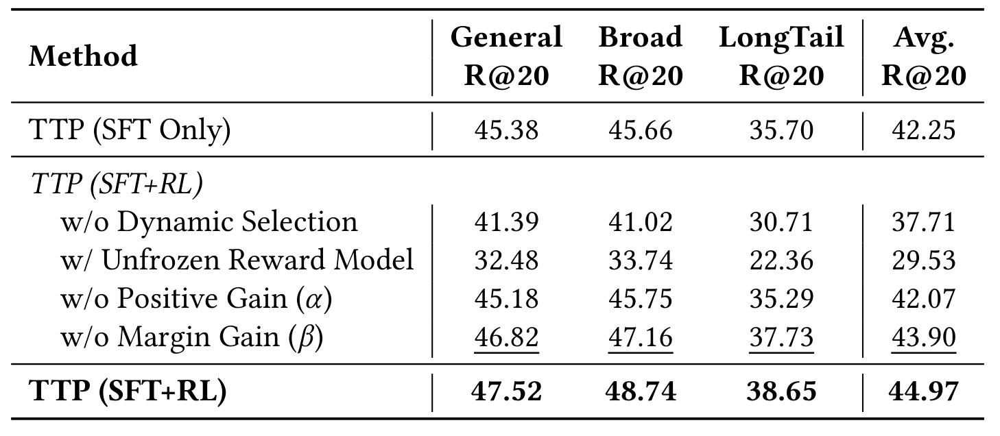
Table 7 进一步把 RL 稳定性拆开。使用随机 rollout 做 contrastive positive 的平均 Recall@20 是 37.71；让未冻结的 actor 同时充当 reward model 时更降到 29.53，General/Broad/LongTail 分别只有 32.48/33.74/22.36。这不是小幅过拟合，而是自指评分空间发生漂移：actor 改变表示后又用同一表示奖励自己，容易放大不可迁移的 scoring artifact。移除 positive gain $\alpha$ 后平均 42.07，移除 margin gain $\beta$ 后为 43.90，完整模型 44.97，表明绝对拉近正例比扩大相对负例间隔贡献更大，但两者都有效。该消融支撑 frozen SFT anchor 与双增益奖励的设计；尚未回答的是换一个外部 reranker、人工偏好或曝光去偏 reward 是否更稳，因为论文只比较了冻结/不冻结当前 SFT 模型。
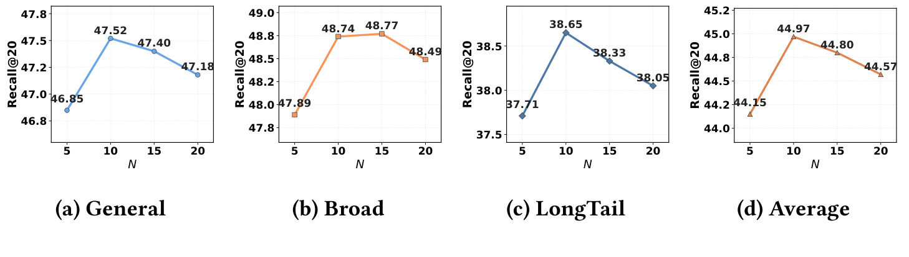
Figure 6 比较 $N=5,10,15,20$。General 从 46.85 升到 47.52 后回落到 47.40/47.18；Broad 为 47.89、48.74、48.77、48.49，$N=15$ 极微小高于 10，但平均曲线仍在 10 达峰；LongTail 为 37.71、38.65、38.33、38.05；四组平均是 44.15、44.97、44.80、44.57。因而“性能在 $N=10$ 达到综合最优”比“所有单项都在 10 达峰”更准确。对线上系统，这个结果同时影响 token 成本、隐私暴露和噪声：扩大历史窗口会增加更多与当前 query 无关的消费记录，重排器也可能偏向表面词重合。论文只在候选经过 bge-reranker 的情况下比较 $N$，尚未把时间衰减、历史来源、家庭共享账号和不同 top-$N$ 选择器分开消融。
3.7 部署、蒸馏、吞吐与七天线上 A/B
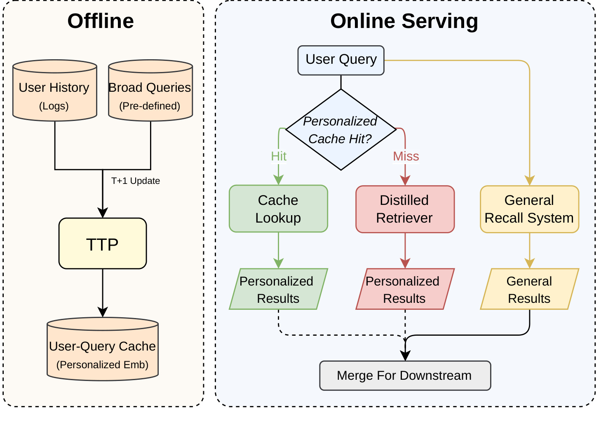
Figure 7 明确了 full TTP 不在每次请求上实时生成。离线侧按 T+1 更新，用用户日志和预定义 broad queries 运行 3B TTP，预计算 user-query personalized embedding 存入缓存；在线查询命中时直接 cache lookup 再做 ANN，未命中时交给 305M distilled retriever。个性化结果与现有 general recall 并行产生，在固定候选预算下合并后进入同一 downstream ranking。缓存命中路径覆盖 10.59% query volume 与 11.80% user volume，这两个比例也限定了 full reasoning 的直接作用范围：绝大多数 miss 依靠学生近似，最终线上增益是缓存、蒸馏、通用召回和合并策略共同作用的系统结果，不能只归因于 3B 模型每次“思考”。
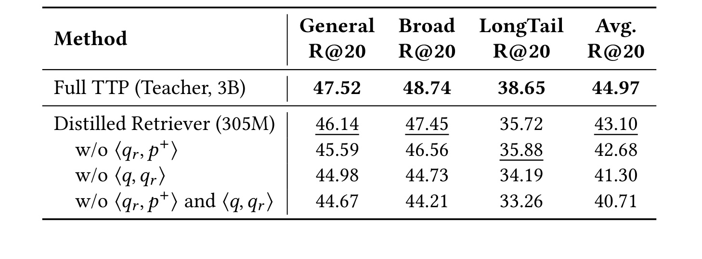
Table 8 中 3B Full TTP 的 General/Broad/LongTail/平均 Recall@20 为 47.52/48.74/38.65/44.97，305M 学生为 46.14/47.45/35.72/43.10，平均只损失 1.87 点，但 LongTail 损失 2.93 点，说明长尾个性化更难压缩。学生联合优化三个等权 pair：原查询表示与正物品 $\langle q,p^+\rangle$、改写表示与正物品 $\langle q_r,p^+\rangle$、原查询与改写一致性 $\langle q,q_r\rangle$。去掉改写—正物品项平均变为 42.68；去掉原查询—改写一致性降到 41.30；两者都去掉为 40.71。后两项把 teacher 的重写语义迁回不需自回归生成的原查询表示，其中 view consistency 的贡献尤其大。表中没有单列 305M 的延迟和显存，效率仍需结合下一张吞吐图判断。
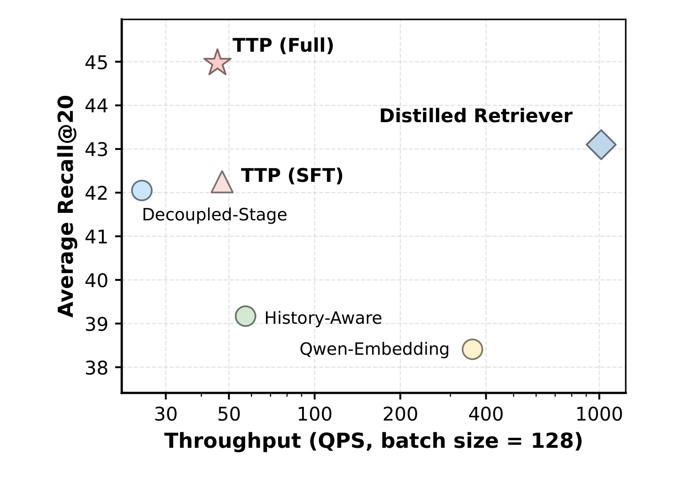
Figure 8 在一张 NVIDIA A100 80GB、batch size 128 上测吞吐，纵轴是三个私有集合平均 Recall@20，横轴 QPS 为对数刻度。Full TTP 位于约 45 Recall、几十 QPS 的高质低吞吐区域；SFT 与 Decoupled-Stage 也只在几十 QPS；History-Aware 和 Qwen-Embedding 吞吐更高但平均 Recall 较低。305M Distilled Retriever 位于约 1000 QPS、43.1 Recall 的右上区域，形成最明显的效率优势。这支持用学生服务 cache miss，但图中的离线 batch 128 吞吐不是单请求尾延迟，也未报告 CPU、ANN、缓存查询、序列化和网络开销；它证明模型前向的相对折中，不等于完整生产链路在所有流量形态下都能达到同一 QPS。
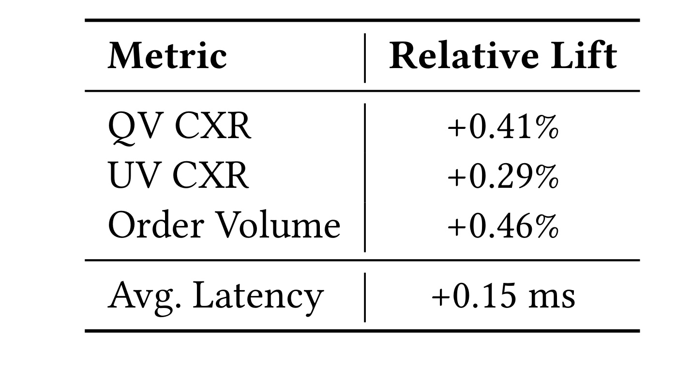
Table 9 报告七天线上 A/B：新增 TTP 个性化召回通道，同时保持 general recall、总候选预算和下游 ranking pipeline 不变。QV CXR 相对提升 +0.41%，UV CXR +0.29%，Order Volume +0.46%，额外端到端平均延迟 +0.15ms；论文声明三项效果提升均满足 $p<0.05$。因此正确表述是：在论文所述平台、七天实验和固定候选/排序控制下，TTP 通道带来相对订单量 +0.46%。它不是订单绝对增加 0.46 个百分点，也不能脱离平台直接外推。论文未披露流量规模、实验/对照分配、绝对 CXR 和订单基线、置信区间、用户去重单位、分城市/类目结果、长期新鲜度或缓存命中分桶；+0.15ms 也只给平均额外时延，没有 P95/P99。控制变量较清楚使因果归因比普通离线提升更强，但统计与异质性信息仍不足以独立复算。
4. 总结
4.1 我的判断与工程可迁移点
TTP 最有价值的贡献，是把“从历史解释 query”与“为 ANN 形成 embedding”变成同一可训练接口，并通过 Table 6/7 证明这不是简单的 prompt rewrite：Intent-Q 在 RL 后的额外收益更大，随机 rollout 会污染表示，actor 自评甚至崩塌。方法因而给个性化 RAG、推荐召回和搜索 Agent 一个可迁移原则：显式用户意图可以作为中间语言，但其后训练奖励必须落到最终工具效用，且策略探索与下游表示更新之间要有可回退的质量门。工程上，Figure 7 的 cache+distillation 也比“直接把大模型塞进召回”更现实；离线为高频 user-query pair 做深推理，在线用学生覆盖长尾请求，再与通用召回并行合并。
复现应优先做三步。第一，在公开 KuaiSearch 上复现 SFT-only、full RL、w/o Dynamic Selection 和 frozen/unfrozen reward 四条线，先确认 37.71/29.53 的失败模式而非只追最佳值。第二，记录 teacher 五候选经 gain 过滤后的通过率、no-rewrite 比例和不同 history $N$ 下的 reward 分布，检查数据清洗是否把偏差提前写入学生。第三，在蒸馏实验中分别测三项 pair loss、单请求 P50/P95、batch 吞吐与 ANN 端到端延迟，确认 305M 学生的 1.87 点平均损失是否换来真实服务收益；若有线上条件，再按 cache hit/miss、Broad/LongTail、城市和类目分桶观测增量。
4.2 局限、风险与后续跟进
至少有五个限制需要保留。其一，私有 ground truth 是最终购买，受曝光、价格、库存和既有 ranking 共同影响，检索奖励可能学习平台偏差。其二，购买历史涉及敏感偏好和家庭共享账号，显式生成 intent-enhanced query 增强了可审计性，也可能把不该使用的属性说得更明确。其三，公开 Amazon 查询是合成数据，KuaiSearch 训练也要重新跑 teacher 构造；论文虽给出代码声明，但大规模私有数据、内部 Relevance 标注和线上系统不可完全复现。其四，人工案例只有 200 个，未披露标注一致性，2.3% 过度个性化不能代表全站风险上限。其五，线上 A/B 只有七天、只给相对 lift 和平均延迟，未展示新用户、兴趣漂移、缓存陈旧、P99 或长期多样性。
后续值得跟进三条线。第一，等待代码与 CIKM 最终版本，核对数据清洗、GRPO reward 实现、缓存更新策略和统计检验细节是否补全；这些决定结果能否从论文公式落到可复现实验。第二，比较 frozen SFT reward、独立 cross-encoder、曝光去偏 reward 与多目标 reward，观察稳定语义锚点是否必须来自同一模型。第三，把单轮购买历史扩展到多轮会话和可编辑用户记忆，同时加入“证据不足则 no-rewrite”、敏感属性屏蔽与用户可见纠错机制；只有把过度个性化当成可测风险，而不是少数案例，显式推理才可能成为长期可信的个性化召回接口。
总体而言，论文用私有/公开离线结果、核心与 RL 消融、蒸馏效率和受控线上 A/B 建立了较完整证据链。最强结论是“检索效用对齐的显式用户意图推理在含混与长尾查询上有效，并可通过缓存和蒸馏接入现有召回”；更强的跨平台收益、长期行为影响与隐私安全则仍未被当前证据覆盖。